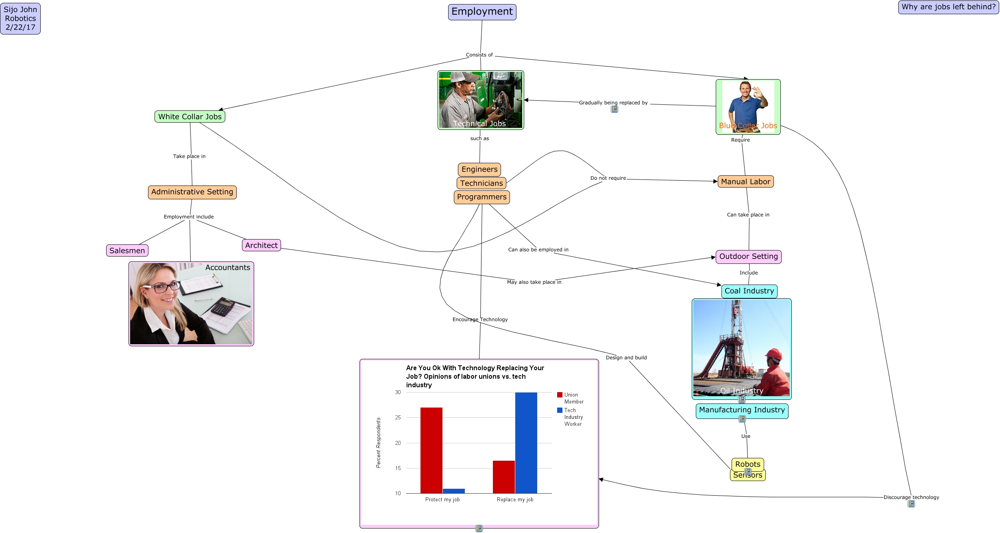

WARNING:
JavaScript is turned OFF. None of the links on this concept map will
work until it is reactivated.
If you need help turning JavaScript On, click here.
This Concept Map, created with IHMC CmapTools, has information related to: employment, Employment Consists of Technical Jobs, Manual Labor Can take place in Outdoor Setting, Programmers Encourage Technology, Outdoor Setting Include Oil Industry, Blue Collar Jobs Require Manual Labor, Blue Collar Jobs Discourage technology, Administrative Setting Employment include Accountants, Programmers Can also be employed in Coal Industry, Programmers Design and build Sensors, Manufacturing Industry Use Robots, Employment Consists of Blue Collar Jobs, Architect May also take place in Outdoor Setting, Employment Consists of White Collar Jobs, Blue Collar Jobs Gradually being replaced by Technical Jobs, Administrative Setting Employment include Salesmen, White Collar Jobs Do not require Manual Labor, White Collar Jobs Do not require Technicians, Technical Jobs such as Engineers, Administrative Setting Employment include Architect, White Collar Jobs Take place in Administrative Setting
